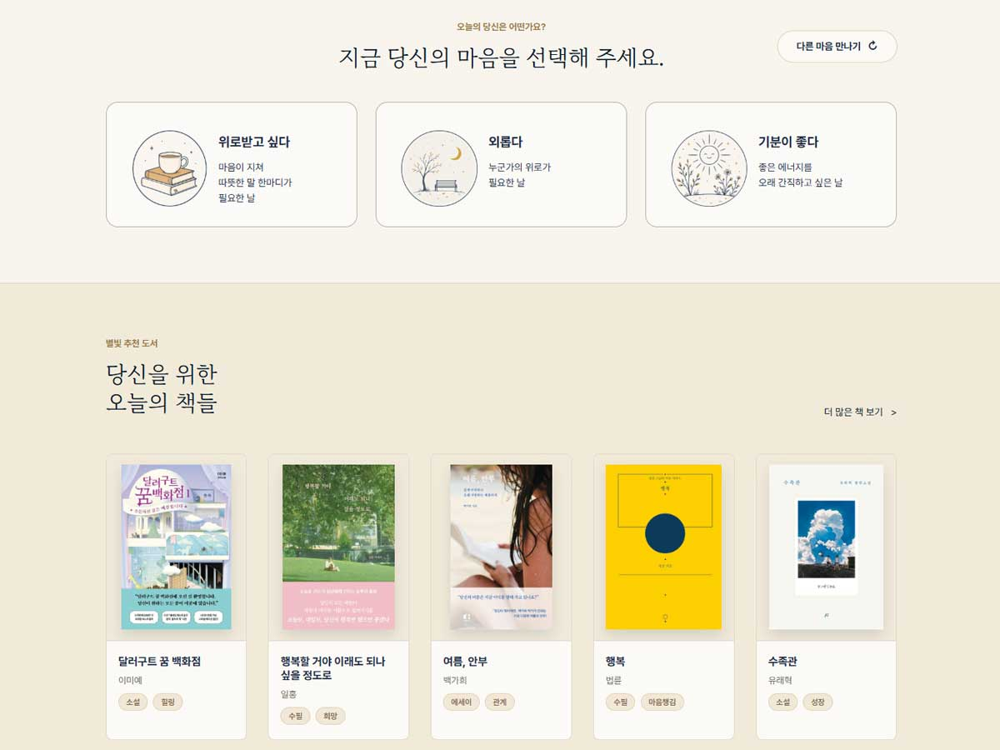
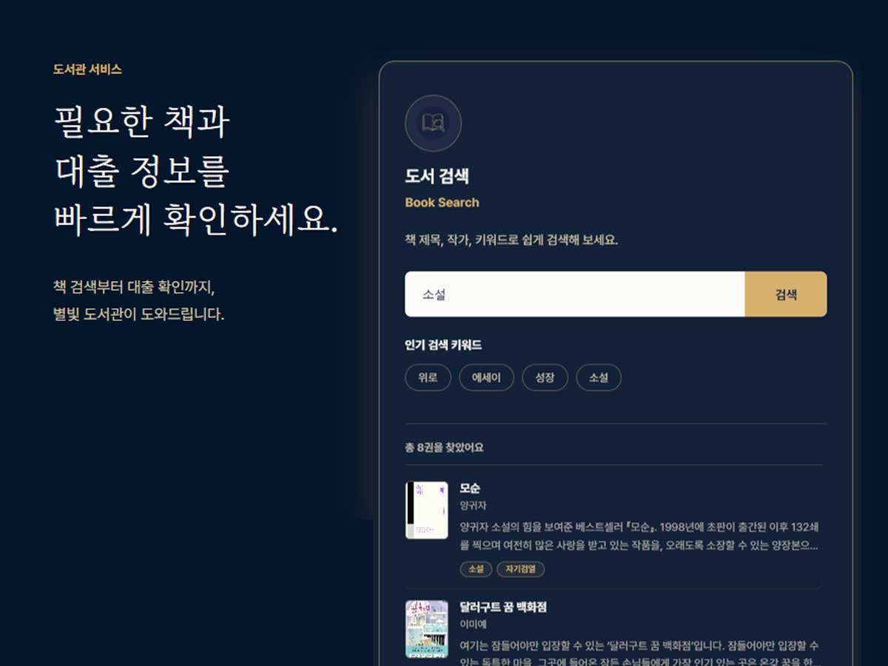
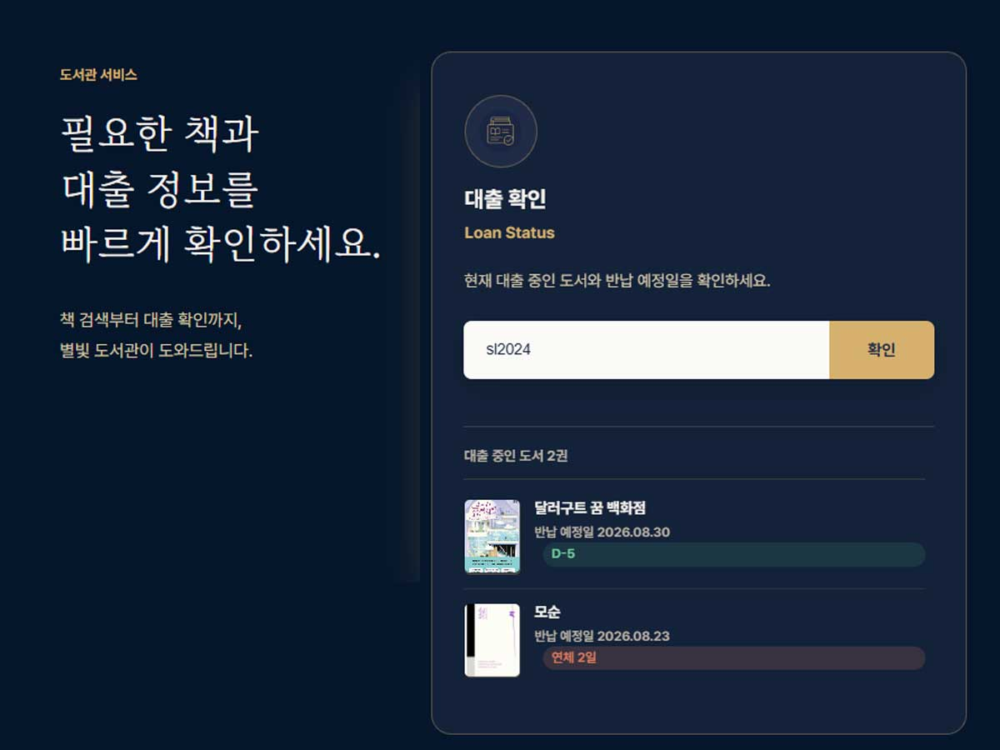
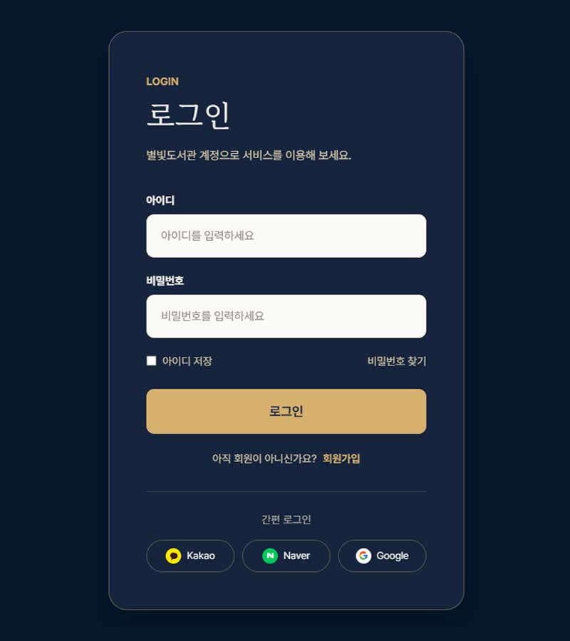
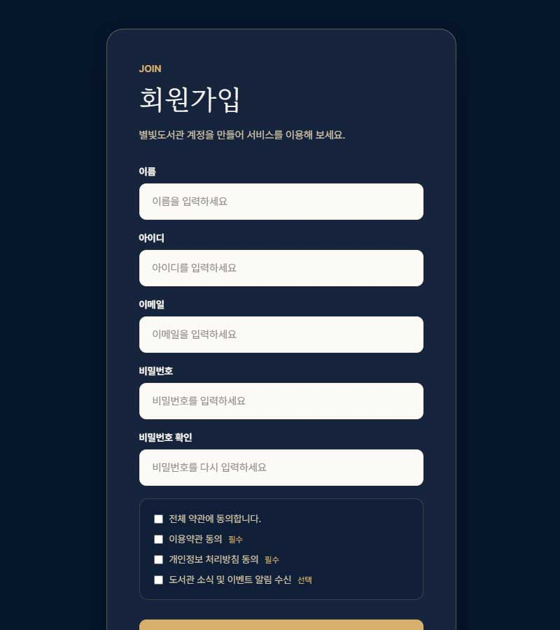
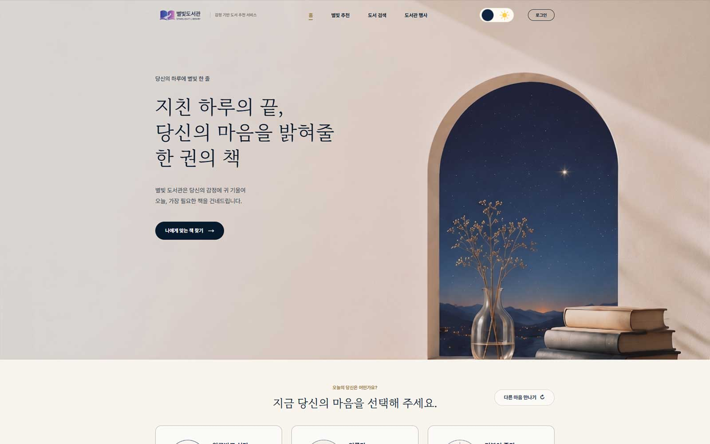
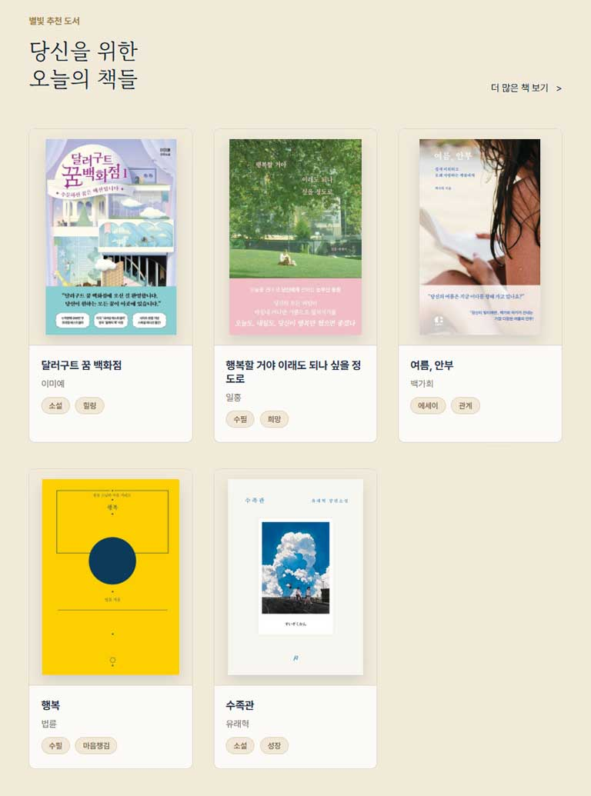
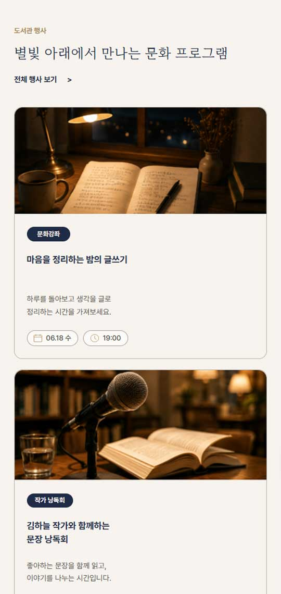

FEATURE 01
감정 카드 랜덤 출력과 감정별 추천
"외롭다 — 누군가의 위로가 필요한 날"처럼 감정과 설명이 짝지어진 12개의 감정 카드 중 3개를 랜덤으로 보여주고, '다른 마음 만나기' 버튼으로 다시 뽑을 수 있습니다. 감정을 선택하면 연결된 도서 카드만 필터링되어, 이 프로젝트의 핵심인 감정 기반 추천 흐름이 완성됩니다.

BRANDING RATIONALE
별빛도서관은 처음부터 브랜드 콘셉트를 세워 만든 프로젝트입니다. 책을 나열하는 도서관 사이트가 아니라, "지친 하루의 끝, 당신의 마음을 밝혀줄 한 권의 책"이라는 문장처럼 사용자의 감정에 귀 기울여 오늘 가장 필요한 책을 건네는 감성 큐레이션 서비스를 목표로 했습니다.
BRAND NAME
밤하늘의 '별빛'과 '도서관'을 결합했습니다. 하루를 마친 밤 시간의 독서, 어두운 마음을 밝히는 한 권의 책이라는 이미지를 이름 하나로 전달하려 했습니다.
WHY EMOTION-BASED
장르·베스트셀러 같은 일반적 분류 대신 감정 선택 → 도서 추천 흐름을 핵심 UX로 잡았습니다. "외롭다", "지쳤다" 같은 12개의 감정 카드 중 3개가 랜덤으로 제시되고, 선택하면 그 감정과 연결된 책이 필터링됩니다 — 정보 검색이 아니라 위로받는 경험을 설계했습니다.
COLOR
밤하늘의 딥 네이비(#14213D)를 브랜드 메인 컬러로 세우되, 검정 텍스트와 명도가 겹치지 않도록 라벨·강조 같은 작은 요소에는 밝은 별빛 블루(#3D5A99)를 파생색으로 사용합니다. 베이지·아이보리 배경 위에 골드/브라운은 보조 포인트로 얹었습니다. 따뜻한 도서관의 낮과 별빛이 뜨는 밤을 오갈 수 있는 조합이라, 다크모드(딥 네이비 + 골드)가 콘셉트의 일부로 자연스럽게 이어집니다.
TYPE PAIRING
본문·메뉴·버튼은 Pretendard로 정돈하고, 감성적인 제목에만 마루 부리(MaruBuri)를 썼습니다. "공공기관 도서관"이 아니라 "감성 큐레이션 서비스"로 보이게 하는 결정적인 한 수였습니다.
DESIGN TOKENS
COLOR
TYPE
PRETENDARD
당신의 하루에 별빛 한 줄
본문 · 메뉴 · 버튼
MARUBURI
마음을 밝혀줄 한 권의 책
감성적인 제목 (히어로 · 섹션 타이틀)
OVERVIEW
페이지는 히어로 → 감정 선택 → 별빛 추천 도서 → 도서관 서비스(도서 검색 / 대출 확인) → 도서관 행사 → 푸터 흐름으로 구성됩니다. "감정 선택 → 책 추천 → 검색/대출 확인 → 행사 참여"로 자연스럽게 이어지도록 설계해, 예쁜 페이지가 아니라 서비스형 웹사이트로 읽히는 것을 목표로 했습니다.

KEY FEATURES
FEATURE 01
"외롭다 — 누군가의 위로가 필요한 날"처럼 감정과 설명이 짝지어진 12개의 감정 카드 중 3개를 랜덤으로 보여주고, '다른 마음 만나기' 버튼으로 다시 뽑을 수 있습니다. 감정을 선택하면 연결된 도서 카드만 필터링되어, 이 프로젝트의 핵심인 감정 기반 추천 흐름이 완성됩니다.

FEATURE 02
제목·저자·키워드 기준으로 검색하고, '위로 · 에세이 · 성장 · 소설' 인기 키워드 버튼을 누르면 자동으로 검색이 실행됩니다. 결과가 없을 때의 안내 문구, 입력값이 비면 기본 안내로 복귀하는 처리까지 — 레이아웃만 짠 것이 아니라 사용자 입력을 받아 결과를 바꾸는 기능을 구현했습니다.

FEATURE 03
회원번호(예: SL2024)를 입력하면 대출 중인 도서와 반납 예정일이 즉시 조회됩니다. 실제 API 연동 전 단계로, JavaScript 배열 데이터를 활용해 도서 검색과 대출 조회의 서비스 흐름을 구현했습니다.

FEATURE 04
라이트/다크모드 전환 시 body 클래스와 함께 감정 카드 아이콘까지 라이트/다크 이미지로 교체됩니다. 밤하늘·별빛이라는 브랜드 콘셉트에서 다크모드는 장식이 아니라 야간 독서 모드라는 서비스 맥락을 가집니다.
FEATURE 05
메인 서비스와 분리된 별도 페이지로, 브랜드의 딥 네이비 · 골드 톤과 MaruBuri 세리프 타이틀을 그대로 이어받아 "야간 독서 모드"의 연장선처럼 보이도록 설계했습니다. 회원가입에서는 전체 동의 체크박스가 개별 약관 항목과 양방향으로 연동되고(전체 클릭 시 개별 일괄 체크, 개별 상태 변경 시 전체 체크 자동 갱신), 이름 · 아이디 · 이메일 형식 · 비밀번호 길이 · 비밀번호 확인 일치 · 필수 약관 동의까지 순차적으로 유효성 검사를 통과해야 제출되도록 구현했습니다.


RESPONSIVE



TROUBLESHOOTING LOG
코드 리뷰를 이어가며 발견한 문제를 하나씩 고쳐온 기록입니다.
발견히어로의 '나에게 맞는 책 찾기' 버튼이 감정 섹션에 클래스만 추가할 뿐, 화면에 체감되는 변화가 없었습니다.
핵심 CTA가 실제로 동작하는 것처럼 느껴져야 감정 선택 흐름으로 자연스럽게 이어집니다.
해결클릭 시 감정 선택 섹션으로 부드럽게 스크롤 이동하도록 jQuery animate 처리를 추가했습니다.
발견책 카드에 제목·저자·태그까지만 있고, 선택된 감정에 대한 피드백 문구가 없었습니다.
"오늘 당신은 '지쳤다'를 선택했어요" 같은 한 문장이 있어야 단순 필터링이 아니라 큐레이션으로 읽힙니다.
해결감정 선택 결과 문구를 추천 영역 상단에 표시하고, 책 카드 클릭 시 소개·추천 이유가 뜨는 상세 모달을 추가했습니다. 다크모드 선택도 localStorage에 저장해 재방문 시 유지되도록 했습니다.